:)
数据集
项目给出了2个数据集 UCF101-24 和 J-HMDB-21
这里使用 UCF101-24
数据集的注解也就是在 cfg/下ucf24.data中写明的trainlist.txt和testlist.txt
预训练的模型权重
都放到项目目录下的weights/
模型训练
在项目目录下有4个.sh脚本
1 | run_jhmdb-21.sh |
这里用了第二个进行训练
run_ucf101-24.sh的内容:
1 | python train.py --dataset ucf101-24 \ |
更改resume_path:
1 | --resume_path path_to/backup/yowo_ucf101-24_16f_best.pth |
最后一行是检验的命令
根据每个epoch产生的训练数据，计算24个类别的AP(average precision)，最后再计算mAP(mean average precision)
更改cfg/ucf24.data:
1 | base, train, valid |
根据实验环境，这里修改了gpus:
1 | gpus = 1,2,3 |
用后三张卡跑
模型检验
- groundtruths
项目目录下的evaluation/Object-Detection-Metrics/下有groundtruths_jhmdb.zip和groundtruths_ucf.zip
就地解压第二个，得到groundtruths_ucf目录
- 命令
在run_ucf101-24.sh中的最后一行，可能是检验模型的命令
它将执行evaluation/Object-Detection-Metrics/pascalvoc.py--detfolder指明了生成的训练数据的路径。默认是在项目目录下每完整跑完一轮epoch和一轮test，将在YOWO/ucf_detections/detections_x下生成xxx.txt的检测数据，其名称与样本一一对应，其内容的每一行由6个值：类别id，置信度，x1，y1，x2，y2。两对坐标分别是框的左上角与右下角。
遇到的问题
- 进程被killed
一般来说，操作系统会在资源紧张的时候杀死进程，都是这次碰到的是在资源充足的情况下发生的。也许与服务器正在部署集群有关。
这是服务器的显卡，四张2080Ti，用后三张在跑。
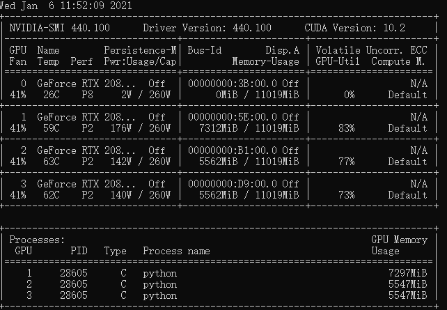
数据集UCF24提供了337834个训练样本，速度大概是30个样本每秒，所以一个epoch大概是3个多小时。然而现实情况是，往往一个epoch都跑不到就会出现Killed提示，进程被杀死了。
根据项目的逻辑，在一个epoch完成之后，会进行测试、评分、保存模型。倘若进程突然停止，则当前epoch的工作就相当于没有做。
暂时的解决办法是，将datasets/ucf24/下的trainlist.txt和testlist.txt各随机地取出十分之一，存入两个小文件中（这里的例子是trainlist_tiny.txt）这样，一轮的时间大约是20分钟。
然而现实是，即使是这样，神奇的Killed仍然产生了，没来得及保存。
那么 21:08 成功了一轮
写了一个脚本，检测到杀死之后自动重启
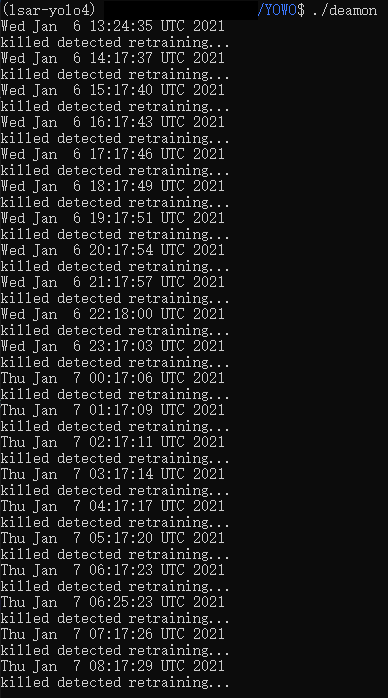
昨天晚上11点到今天16点，守护进程每分钟检查一次
很忠实地在每个小时的17分杀死进程
在十分之一数据上产生的detections
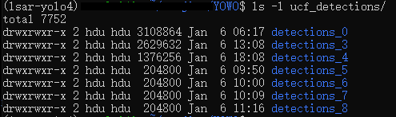
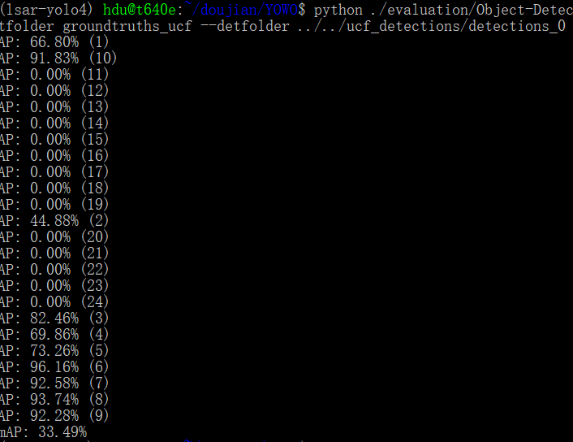
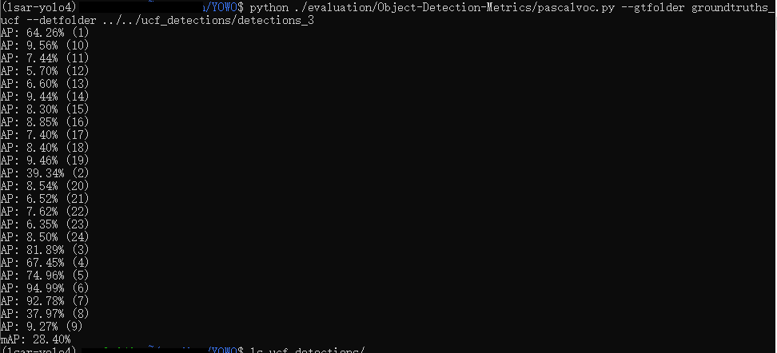
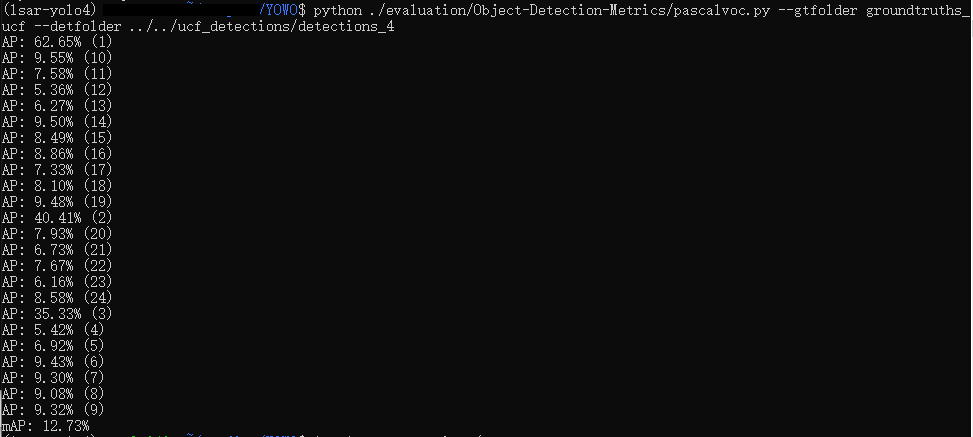
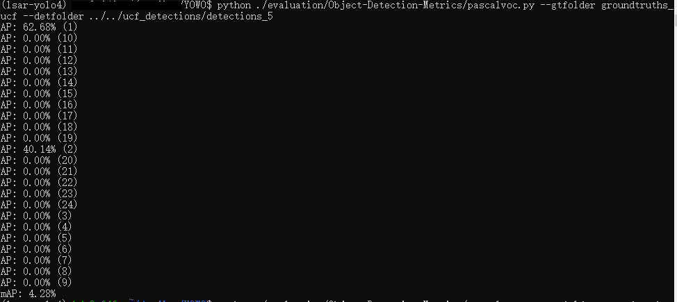
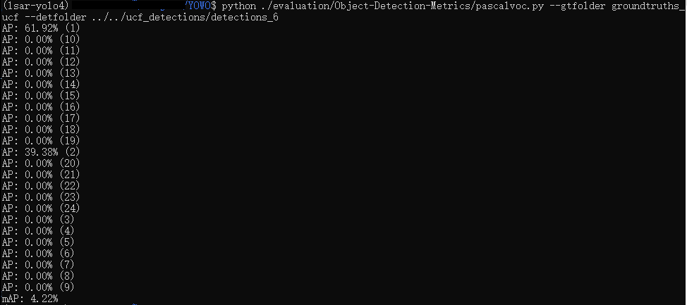
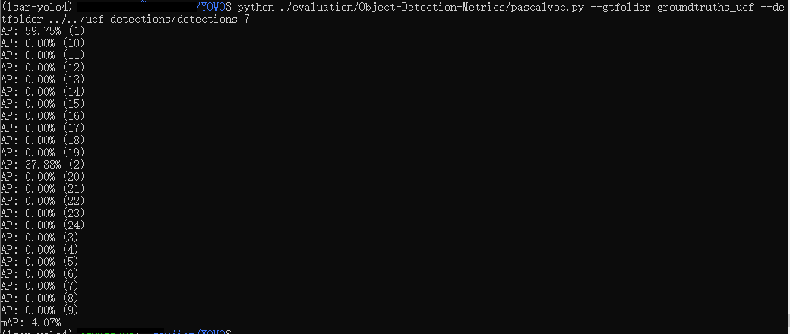
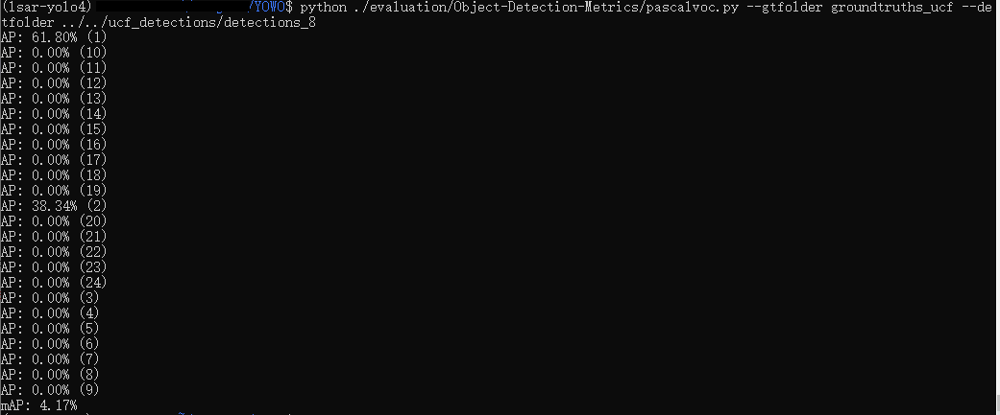
样本太少，没有覆盖到全部的24个类别
但是全部的数据集又不能在1个小时内跑完
打算colab上跑一跑，起码不会Killed
- colab解压速度很慢
1 | 首先要更改工作目录： |
2021-01-07 15:21 今天一直在解压，中间断了一次，预计是5个小时
解压好了 但是出现了drive找不到的情况：
从GPU切换回普通环境，跟没解压一样
云盘有延迟，解压完成之后，需要过一段时间，才能在盘中显示
这是我在删掉datasets之后才认识到的
现在大概需要等一段时间，直到盘的状态和已使用空间匹配
现在回收站会不断地冒出ucf24里的文件，之前已经永久删除了一部分，只能硬着头皮继续删
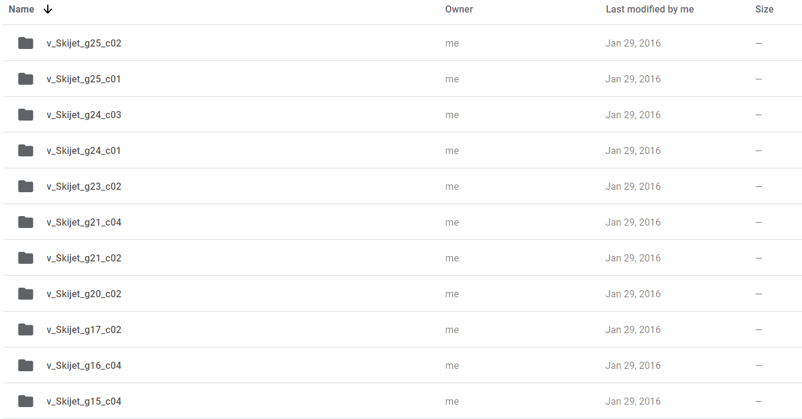
使用colab 应当将资料存入drive，如预训练的模型，数据集的压缩包，配置文件。
需要训练时，将github上的项目克隆到colab工作区，再将资料搬入工作区，进行解压，配置。
完成训练后，应当及时保存模型